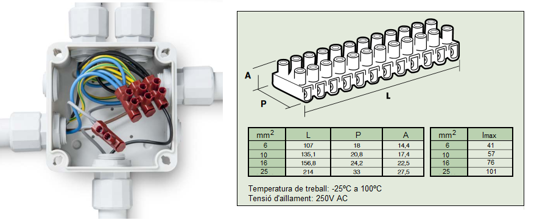
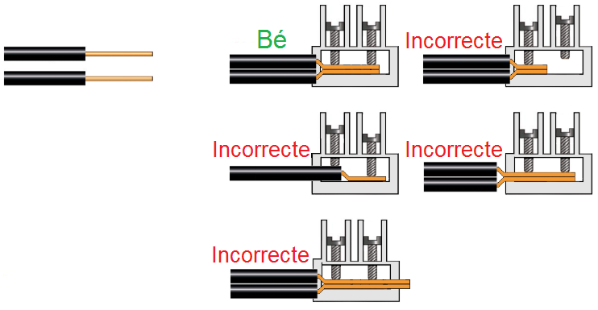

Segons la ITC-BT-19 (punt 2.11), la unió de dos o més conductors s'ha fer utilitzant terminals de connexió individuals o agrupats en un bloc, com per exemples les regletes de connexió.

Les regletes s'anomenen segons la secció nominal màxima del conductor que accepta a l'interior del terminal. Així es poden trobar regletes de 6, 10, 16 o 25mm2. Les regletes que s'utilitzen en les instal·lacions d'habitatges (veure figura anterior), es comercialitzen en tires de dotze terminals, amb dos caragols per terminal (o "born"). Altres propietats que hem de tenir en compte són:
- El Corrent o Intensitat a suportar
- Tensió d'aïllament
- Temperatura de funcionament
Es important que la connexió dels cables amb la regleta es realitzi correctament:
